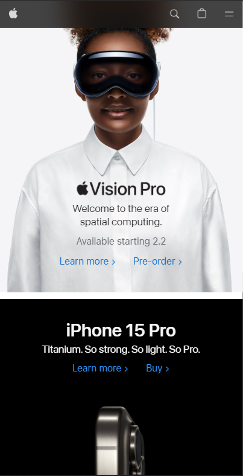
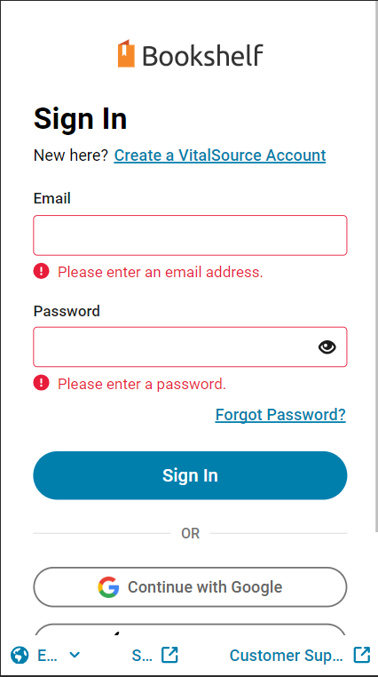

Visual Hierarchy
Apple
apple.com In the screenshot from apple, the design principle of visual hierarchy is shown with their most important product being shown first, and as the user scrolls, they can find more products that the user can purchase. These items being shown on the page are their most expensive products and will bring in the most revenue.
Hicks Law
Vital Source
vitalsource.com Hicks law is displayed here because the user is able to make a decision in little to no time. The sign in screen taking up the whole page makes it easy for the user to find and to not be distracted by any other elements.
Fitts Law
Family Search
familysearch.orgFitts law is displayed here because the share card and the nav are close together. This allows the user to switch between two highly trafficked features of the web page easily.